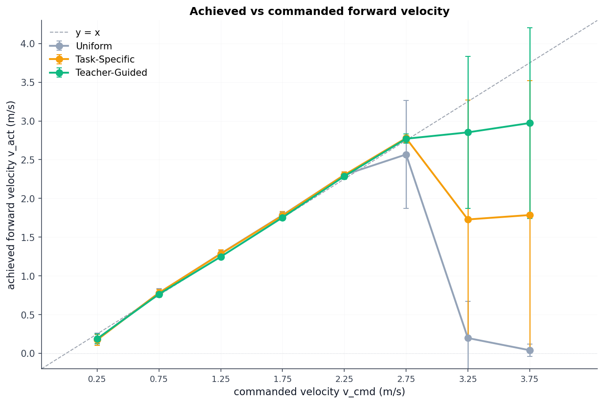
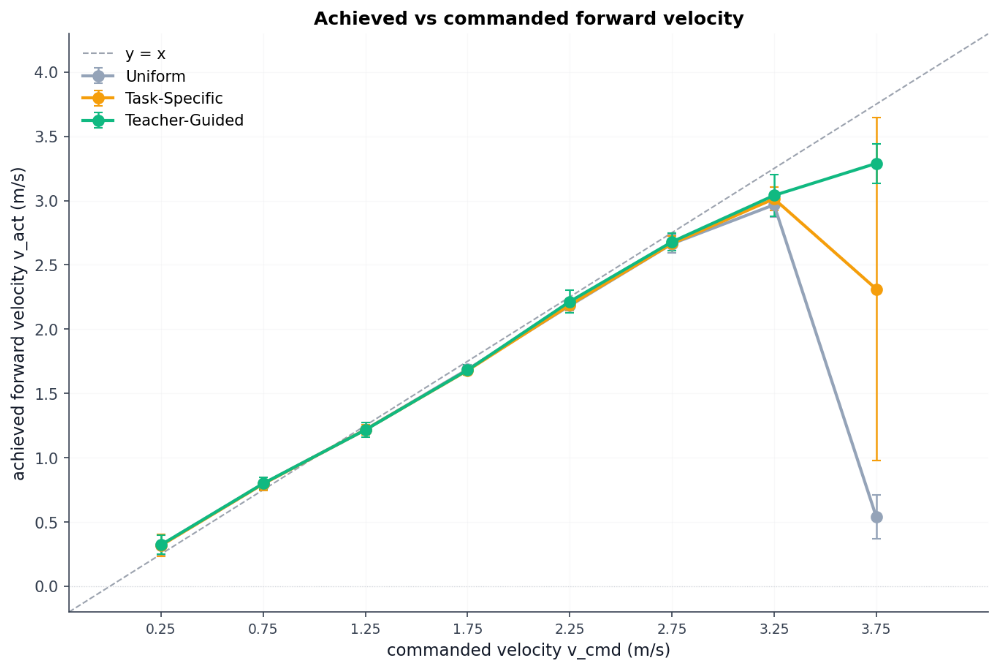
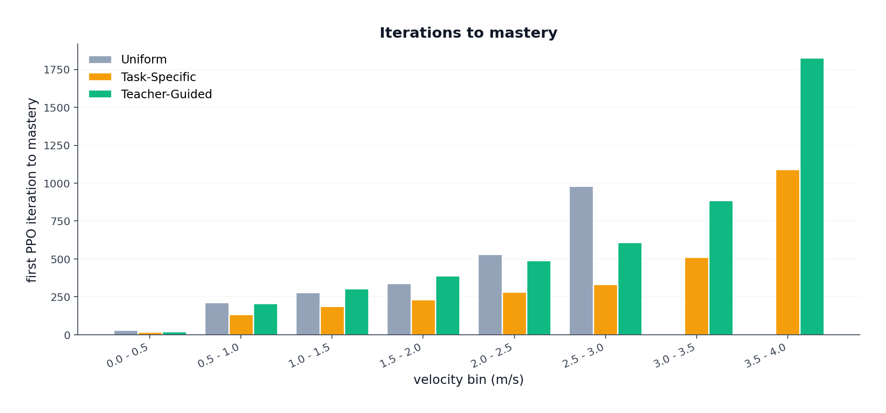
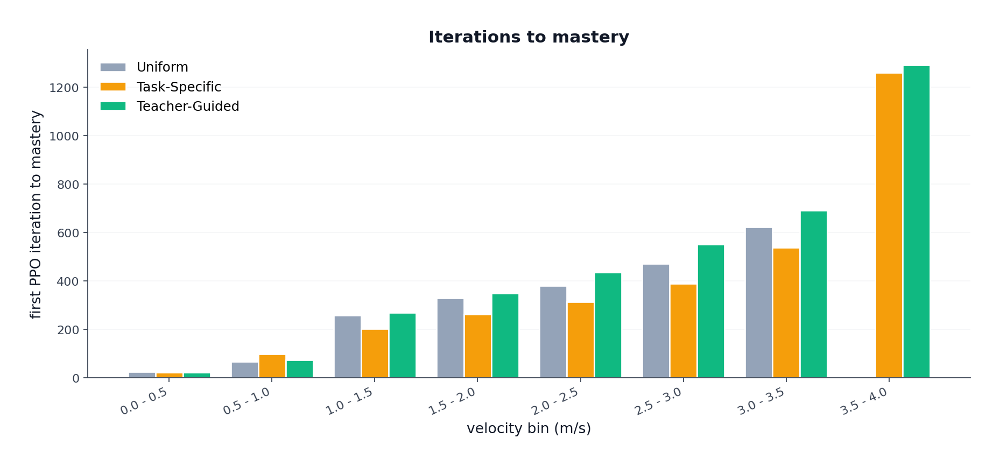
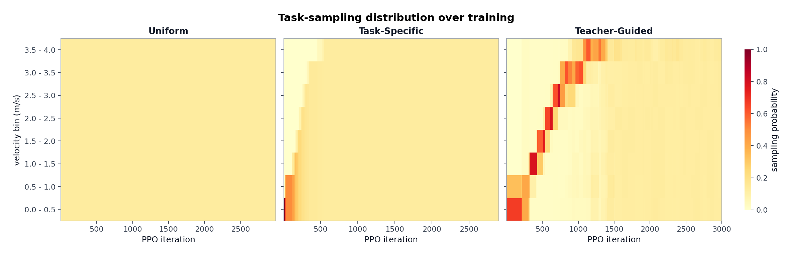
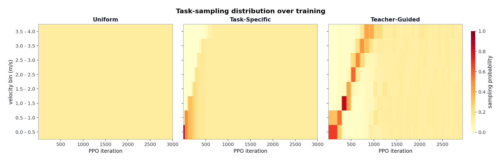
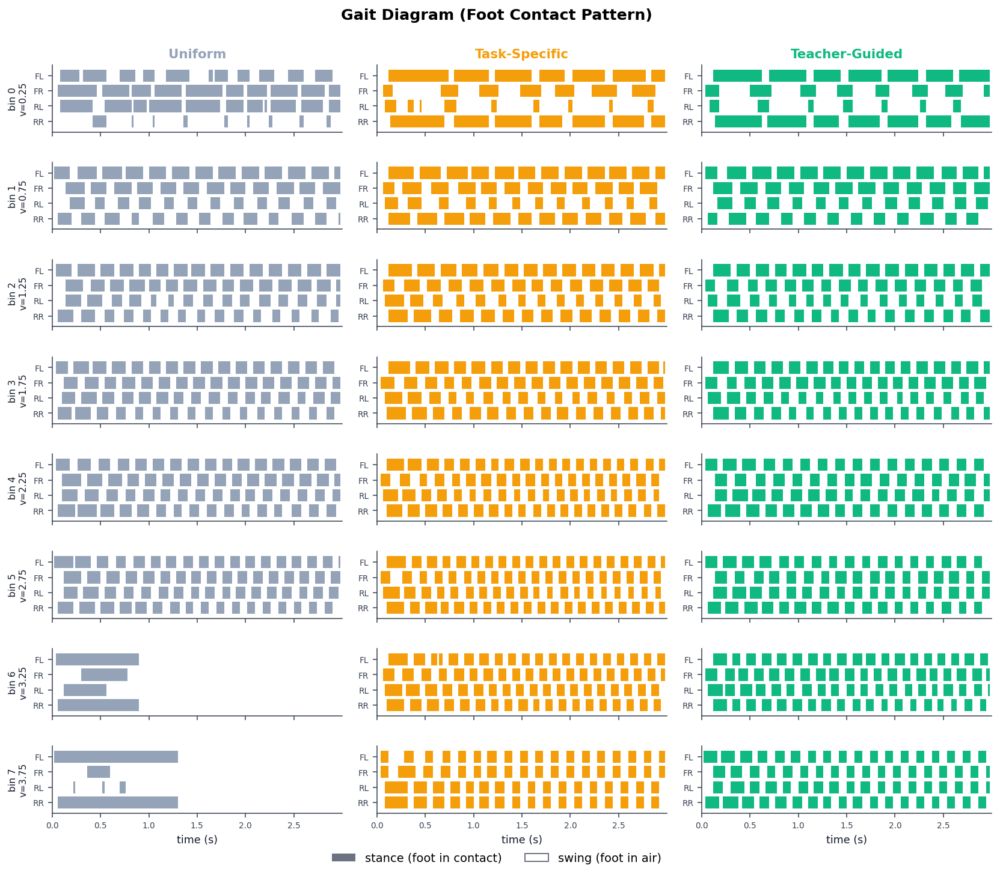
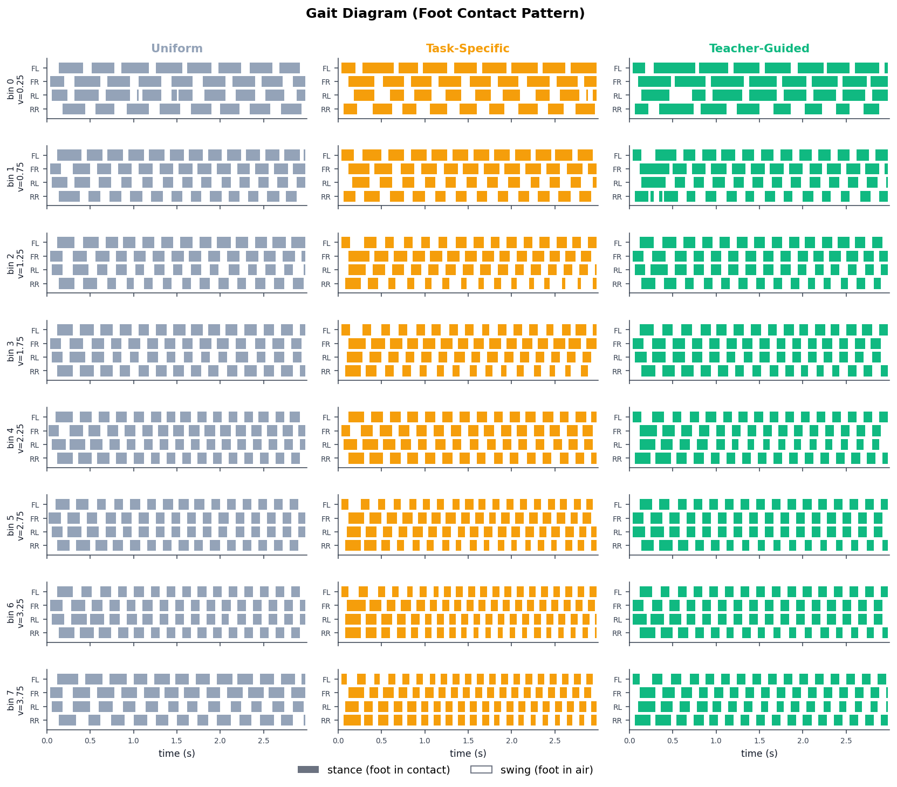
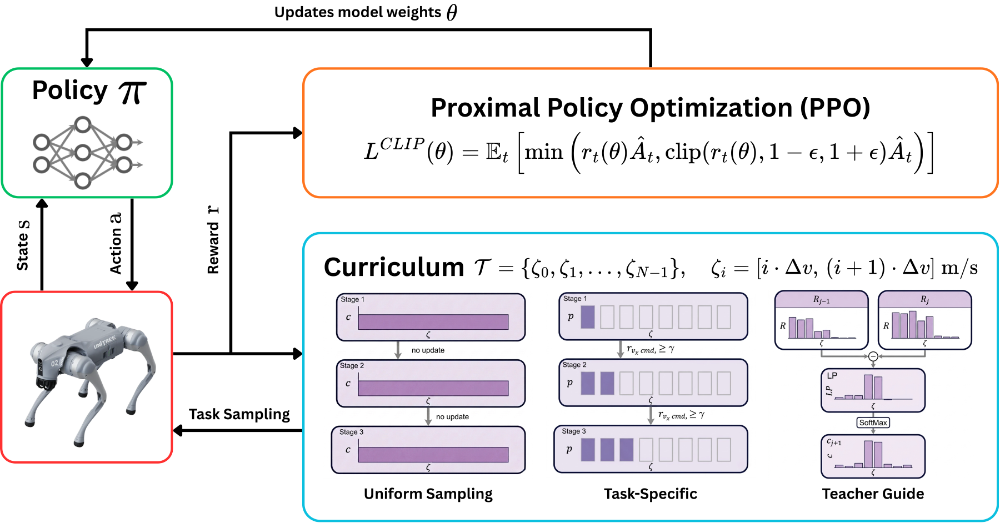

Overview
A study of how two training choices, curriculum learning and reward design, each shape a Unitree Go2 quadruped learning to follow forward-velocity commands from 0 to 4 m/s in Isaac Lab. The speed range is split into bins, and a curriculum decides which bins the robot trains on at each stage.
This was a solo project covering the training and the analysis of all six conditions.
Hardware
The policies are trained and evaluated in simulation.
| Robot | Unitree Go2 Quadruped |
|---|---|
| Actuated Joints | 12 |
| Action | Joint position targets from the policy |
System
| Computer | Intel Core i5-14400F |
|---|---|
| GPU | NVIDIA RTX 4070 Ti SUPER, 16 GB |
| Simulator | Isaac Lab on Isaac Sim 4.5 |
| Learning | PPO with RSL-RL |
| Training | 4096 parallel environments, 3000 PPO iterations per run, 3 seeds per condition, about 36 minutes per run |
| Software | Python 3.10, PyTorch with CUDA |
Process
Split the speed range
Forward speed from 0 to 4 m/s is cut into eight bins of 0.5 m/s. Lateral and yaw commands stay at zero, so the policy only sees a forward-velocity command.
Fix the reward
The upstream Go2 reward makes standing still the best strategy at sprint commands, because the smoothness penalty at 4 m/s outweighs the tracking reward. Two redesigns fix this.
- Sprint-retune weakens four smoothness weights and shortens the feet-air-time threshold from 0.5 s to 0.1 s. It has no term that rewards coordination between feet.
- Energy-regularised keeps those changes and adds an energy term from Liang et al., a cost of transport that rewards less power per unit of speed. It also widens the tracking kernel.
Choose the curriculum
Three ways to choose which speed bin each environment trains on.
- Uniform keeps all eight bins equally likely.
- Task-specific starts at the slowest bin and unlocks the next bins once the tracking reward passes 0.7, after at least 50 episodes.
- Teacher-guided re-weights bins every 100 iterations with a softmax of each bin's learning progress, with a 15% uniform floor.
Train every condition
Each of the six conditions is trained for 3000 iterations with 3 seeds, so the study compares 18 training runs under identical settings except the one factor being tested.
Evaluate each bin separately
Every policy runs deterministically for 100 rollouts of 1000 steps in each bin. Four metrics are recorded.
- Per-bin tracking reward.
- EPTE-SP, the tracking error with a penalty for falling.
- Iterations to reach a tracking reward of 0.7.
- Gait pattern from foot contacts.
Table 1. Reward designs, upstream and retuned values
| Term | Sprint-Retune Reward | Energy-Regularised Reward |
|---|---|---|
| Joint Velocity Weight | \(-10^{-3}\) to \(-10^{-4}\) | Same |
| Joint Acceleration Weight | \(-2.5\times 10^{-7}\) to \(-10^{-7}\) | Same |
| Joint Torque Weight | \(-2\times 10^{-4}\) to \(-2\times 10^{-5}\) | Same |
| Action Rate Weight | \(-0.1\) to \(-0.005\) | Same |
| Feet-Air-Time Threshold | 0.5 s to 0.1 s | Same |
| Tracking Kernel Width | \(\sigma_v\) = 0.5 m/s | \(\sigma_v\) = 1.0 m/s |
| Energy Term | None | \(\exp\!\left(-\frac{\sum_j |\tau_j|\,|\dot q_j|}{500\,|v_x| + 250\,|\omega_z|}\right)\), weight \(0.5\) |
Results
The conditions separate only at the sprint bins 6 and 7. Bins 0 to 4 track equally.
Falls and speed at the sprint bins
- Under the sprint-retune reward, uniform falls in 98% and 100% of rollouts at bins 6 and 7, task-specific in 50%, and teacher-guided in 13% and 17%.
- Under the energy-regularised reward no condition falls. At bin 7 the mean speed is 3.29 m/s for teacher-guided, 2.31 m/s for task-specific and 0.54 m/s for uniform.
Table 2. EPTE-SP and fall rate at bins 5 to 7
| Reward | Bin | Uniform | Task-Specific | Teacher-Guided |
|---|---|---|---|---|
| Sprint-Retune | 5 | 0.139 / 9% | 0.067 / 0% | 0.066 / 0% |
| Sprint-Retune | 6 | 0.982 / 98% | 0.537 / 50% | 0.187 / 13% |
| Sprint-Retune | 7 | 1.000 / 100% | 0.536 / 50% | 0.228 / 17% |
| Energy | 5 | 0.057 / 0% | 0.055 / 0% | 0.057 / 0% |
| Energy | 6 | 0.092 / 0% | 0.079 / 0% | 0.077 / 0% |
| Energy | 7 | 0.857 / 0% | 0.385 / 0% | 0.126 / 0% |


Speed of learning
- Uniform never reaches a tracking reward of 0.7 at bin 7.
- Task-specific reaches it in fewer iterations than teacher-guided at every sprint bin.
Table 3. PPO iterations until the per-bin tracking reward first passes 0.7
| Reward | Bin | Uniform | Task-Specific | Teacher-Guided |
|---|---|---|---|---|
| Sprint-Retune | 5 | 984 | 334 | 576 |
| Sprint-Retune | 6 | Not Mastered | 510 | 836 |
| Sprint-Retune | 7 | Not Mastered | 1100 | 1742 |
| Energy | 5 | 462 | 386 | 558 |
| Energy | 6 | 614 | 526 | 706 |
| Energy | 7 | Not Mastered | 1232 | 1318 |


Sampling distribution
The heatmaps show how often each speed bin is sampled over training under each curriculum.


Gait
- Under the energy-regularised reward every condition trots at the slow bins.
- No condition has a flight phase.
- Under the sprint-retune reward no real walking gait is learned at 0.25 m/s.


Figures and Video
